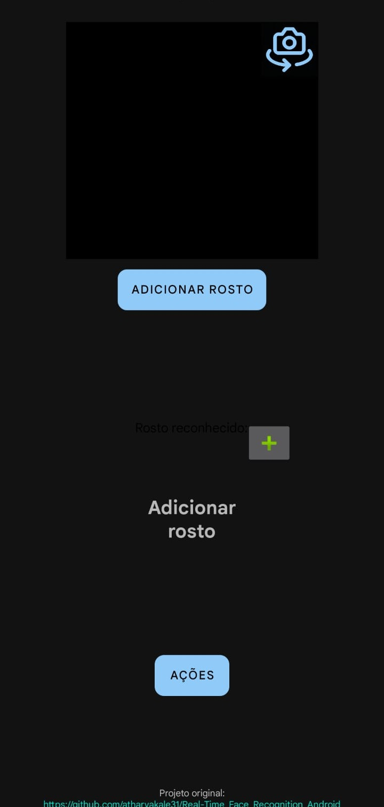
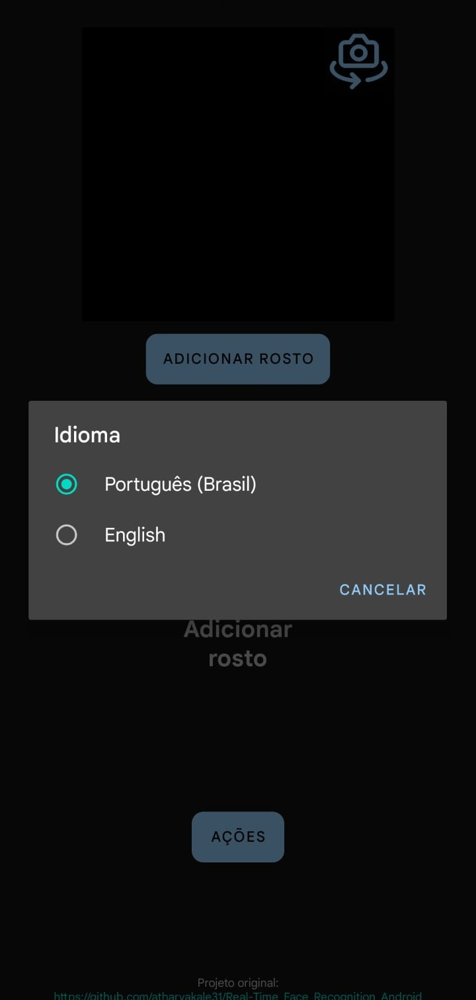
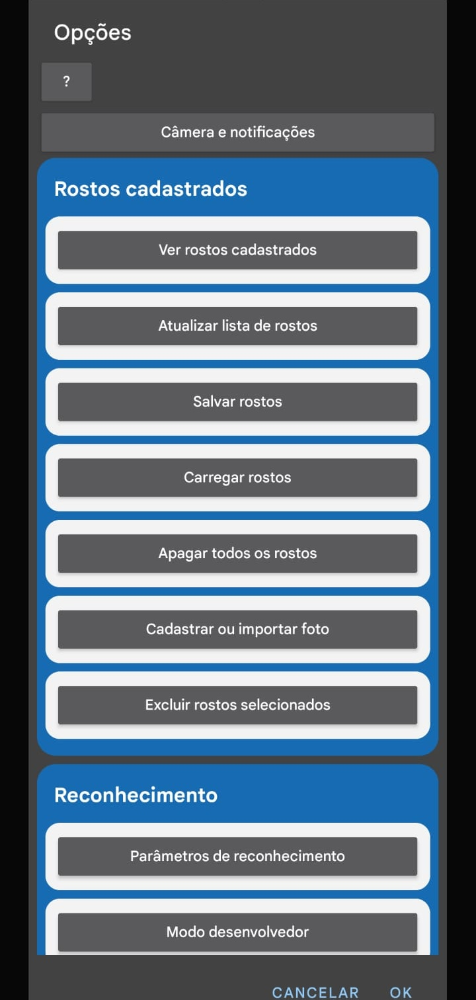
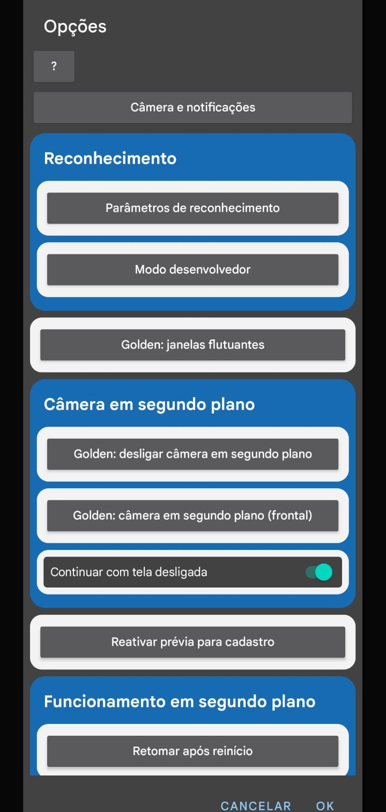
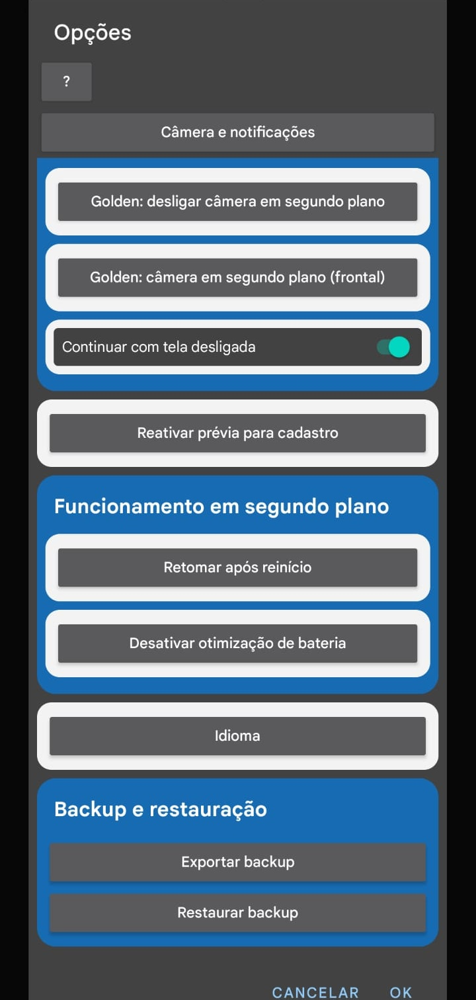

Reconhecimento no aparelho
A base usa ML Kit e MobileFaceNet com TensorFlow Lite. O processamento foi pensado para ser local; o funcionamento totalmente offline da versão modificada ainda precisa de confirmação no aparelho.
Golden Face aproxima o reconhecimento facial da Golden IA: uma experiência pensada para acontecer no próprio aparelho, com liberdade para escolher como usar.
Projeto experimental · Pré-lançamento disponível
A ideia
Golden Face é uma adaptação do aplicativo Real-Time Face Recognition Android, criada para explorar a integração com a Golden IA. O aplicativo original reconhecia rostos offline; a versão Golden acrescenta caminhos experimentais para câmera, exibição e automação.
A base usa ML Kit e MobileFaceNet com TensorFlow Lite. O processamento foi pensado para ser local; o funcionamento totalmente offline da versão modificada ainda precisa de confirmação no aparelho.
Cadastro guiado com câmera ou foto, gerenciamento da lista e adição de amostras aparecem no código experimental. O comportamento precisa ser verificado em uso real.
Alex contribuiu com ideias, orientação e testes; Toqi (IA), em colaboração com Alex, fez as modificações para aproximar o app da Golden, com opções de integração, nomes na tela e recursos para câmera em segundo plano.
Recursos em construção
As opções abaixo aparecem no código da versão integrada experimental. A disponibilidade e o comportamento podem variar conforme a versão do Android, permissões e aparelho.
Há controles para câmera em segundo plano, escolha entre frontal e traseira e janelas flutuantes com nomes. A opção de continuar com a tela apagada está desligada por padrão e depende do Android.
O código prevê uma notificação para a câmera ativa e outra para nome reconhecido. O sistema e as permissões podem afetar sua exibição; o funcionamento ainda precisa ser testado no aparelho.
A integração com a Golden por notificações foi implementada de forma experimental e ainda precisa ser validada no dispositivo. Não há plugin MacroDroid validado nem garantia de eventos em segundo plano.
O código inclui configurações de reconhecimento, retomada após reinício e idioma do menu. A retomada depende do Android; a tradução de outras telas ainda não está completa.
Telas do aplicativo
Capturas da interface experimental, recortadas para retirar detalhes desnecessários. Elas mostram opções, mas não comprovam o funcionamento dos recursos.





Transparência
A versão integrada foi compilada e Alex confirmou, em seu celular, que o salvamento automático e a janela flutuante em segundo plano funcionaram. Depois, ele disse que estava funcionando perfeitamente, sem detalhar testes específicos. Compilar e esses relatos não comprovam o funcionamento de todas as funções em todas as situações.
Reconhecimento facial pode falhar ou confundir pessoas. A confirmação de funcionamento sem internet, a retomada após reinício e o comportamento com tela apagada continuam pendentes de teste.
O repositório público oferece um APK de pré-lançamento e código reconstruído para inspeção. A equivalência entre eles não foi comprovada e o código ainda não tem compilação validada. A origem e os termos de redistribuição dos pesos do modelo incluído no APK continuam em verificação. Ver repositório do projeto ↗
Créditos e origem
Real-Time Face Recognition Android, de Atharva Kale (atharvakale31) e colaboradores. A base original já descreve reconhecimento em tempo real e offline, usando CameraX, ML Kit e TensorFlow Lite.
Conhecer o projeto original ↗Alex Pereira Franco contribuiu com ideias, orientação e testes; Toqi, inteligência artificial, realizou modificações em colaboração com Alex. O projeto original também referencia o modelo MobileFaceNet e sua implementação.
Implementação MobileFaceNet ↗Licença: não encontramos um arquivo de licença geral na raiz do repositório original consultado. Trechos e dependências podem ter licenças próprias. Os direitos e avisos aplicáveis aos componentes ainda precisam ser verificados; não presumimos uma licença para o projeto inteiro.